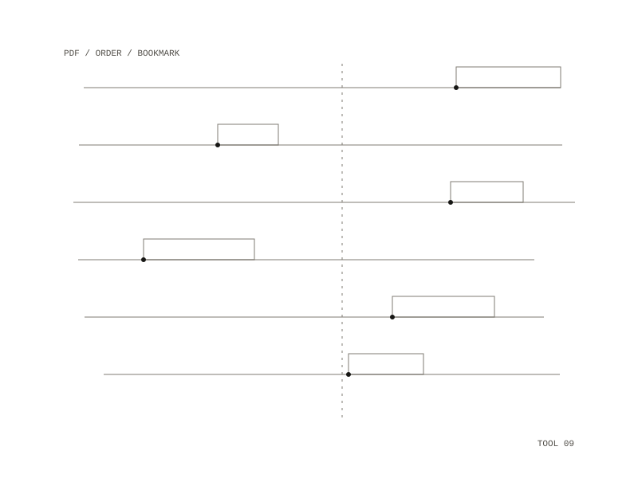

pdfseq
pdfseq merges the numbered PDFs in a folder into one PDF, in numeric order. A file counts when its name starts with a number, as in "1 - A.pdf", "10-b.pdf" or "3- c.pdf"; files are sorted by that number, so 2 comes before 10, and each one gets a bookmark of its number and the rest of the file name, such as "2. middle".

Use
pdfseq DIRwrites the merged PDF next to the folder, named after itpdfseq DIR -o out.pdfwrites it somewhere elsepdfseq DIR --listprints the order and writes nothing
Files whose names do not start with a number, and hidden files, are ignored. If two files share a number it prints a warning naming them. A file it cannot read is skipped and named, and the merge carries on; encrypted files with an empty password are opened. It prints each file's page count as it goes and the total at the end. The script is a single Python file that declares its own dependency, which a script runner fetches on first use.
Tests
The test builds a folder of blank sample PDFs named 0, 2 and 10 plus one unnumbered file, then checks that the order is 0, 2, 10, that the result has 6 pages, that the three bookmarks point at the right pages, and that a folder with no numbered PDFs is refused. On a real folder of course readings it merged 26 files into 574 pages, about 100 MB, with the page count equal to the sum of the inputs and the order and bookmarks checked by hand.
a folder of PDFs whose names start with a number
one PDF with one bookmark per file